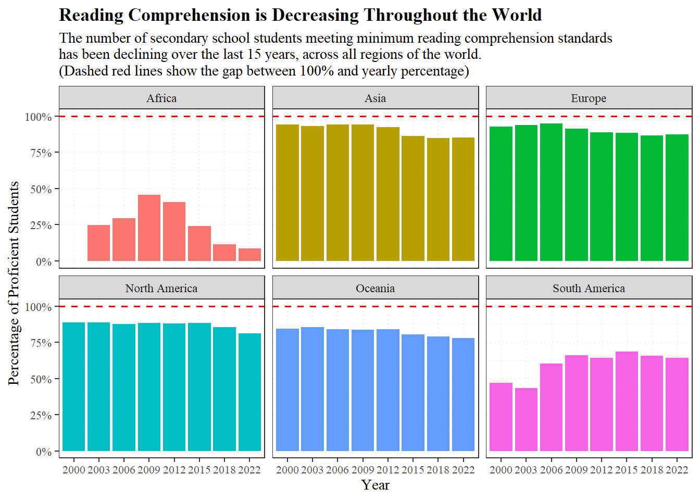
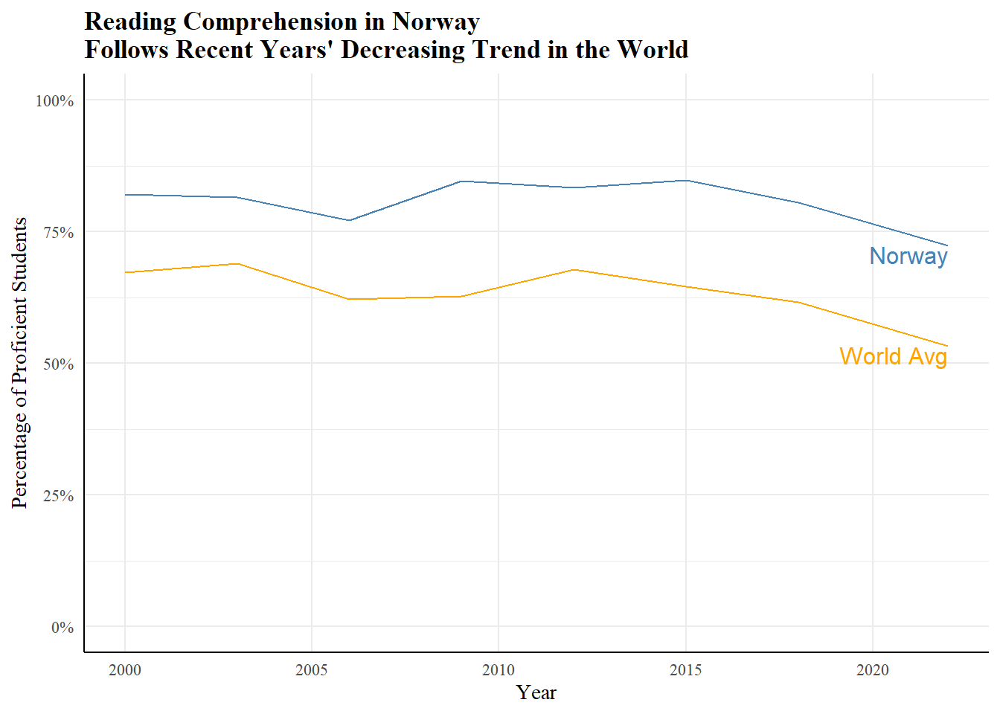
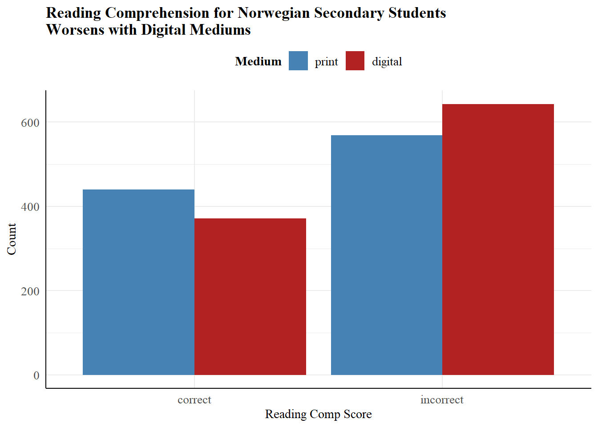

pacman::p_load(tidyverse, readr, readxl, downloader, rio, plotly, knitr, pander, ggthemes, ggrepel, directlabels, ggtext, scales, lubridate, riem, mosaic, DT, forcats, stringr, stringi, pander)
reading <- read_csv(unz("C:\\Users\\madl1\\Downloads\\share-of-children-reaching-sufficient-reading-comprehension-by-the-end-of-lower-secondary-age.zip", "share-of-children-reaching-sufficient-reading-comprehension-by-the-end-of-lower-secondary-age.csv"))
diff_media <- rio::import("C:/Users/madl1/Downloads/mediumeffect.csv")Is Reading Comprehension Declining?
Background/Research Questions
For this study, I was interested in exploring reading comprehension rates throughout the world. My main research question was “Is reading comprehension declining throughout the world? If so, what is causing that decline?
I found data on reading comprehension percentages for each country (from ourworldindata.org), that I will use to explore how reading comprehension has changed over the years.
I also found data on a study done with Norwegian students to look at the effect that reading in a digital medium versus print has on comprehension (from figshare.com), to explore a possible explanation for my overall results.
World Reading Comprehension
region_reading <- reading %>%
filter(!Entity %in% c("World", "High-income countries", "Upper-middle-income countries"),
!Year %in% c(2017)) %>%
mutate(
region = case_when(
Entity %in% c("Albania", "Austria", "Belarus", "Belgium", "Bosnia and Herzegovina", "Bulgaria", "Croatia", "Cyprus", "Czechia", "Denmark", "Estonia", "Finland", "France", "Georgia", "Germany", "Greece", "Hungary", "Iceland", "Ireland", "Italy", "Latvia", "Lithuania", "Luxembourg", "Malta", "Moldova", "Montenegro", "Netherlands", "North Macedonia", "Norway", "Poland", "Portugal", "Romania", "Russia", "Serbia", "Slovakia", "Slovenia", "Spain", "Sweden", "Switzerland", "Ukraine", "United Kingdom") ~ "Europe",
Entity %in% c("Canada", "Costa Rica", "Dominican Republic", "El Salvador", "Guatemala", "Honduras", "Jamaica", "Mexico", "Panama", "Trinidad and Tobago", "United States") ~ "North America",
Entity %in% c("Argentina", "Brazil", "Chile", "Colombia", "Ecuador", "Paraguay", "Peru", "Uruguay") ~ "South America",
Entity %in% c("Algeria", "Mauritius", "Morocco", "Senegal", "Tunisia", "Zambia") ~ "Africa",
Entity %in% c("Azerbaijan", "Cambodia", "Indonesia", "Israel", "Jordan", "Kazakhstan", "Kyrgyzstan", "Malaysia", "Mongolia", "Palestine", "Philippines", "Qatar", "South Korea", "Thailand", "Turkey", "Uzbekistan", "Vietnam") ~ "Asia",
Entity == "Australia" ~ "Oceania"
)
)To begin my study, I grouped each country into its respective region of the world, then filtered out the year 2017, as very few countries had data for that year.
ggplot(region_reading, aes(x = as.factor(Year), y = `End of lower secondary reading`, fill = region)) +
geom_bar(stat = "identity", position = "dodge") +
facet_wrap(~region) +
labs(
title = "Reading Comprehension is Decreasing Throughout the World",
subtitle = "The number of secondary school students meeting minimum reading comprehension standards \nhas been declining over the last 15 years, across all regions of the world.\n(Dashed red lines show the gap between 100% and yearly percentage)",
x = "Year",
y = "Percentage of Proficient Students"
) +
theme_bw() +
theme(
legend.position = "none",
text = element_text(family = "serif"),
plot.title = element_text(face = "bold"),
axis.text.x = element_text(size = 8),
panel.grid = element_line(linewidth = 0.5, linetype = "dotted")
) +
scale_y_continuous(limits = c(0,100), labels = function(x) paste0(x, "%")) +
geom_hline(yintercept = 100, color = "red", linewidth = 0.7, linetype = "dashed")
From this graph, we can see that, overall, reading comprehension has been fairly high for most of the world since the early 2000s. Although Africa and South America have much lower percentages than the other regions, they did have a distinct upward trend during that time.
However, in the late 2000s and early 2010s, each region began to decline, with each region having its lowest percentage of the last 15 years, at least, between 2018 and 2022.
Norway Reading Comprehension
In order to explore a potential reason for the recent decline in reading comprehension, I narrowed my data to look at the change in Norway, specifically, to better compare it to my data from the Norwegian study.
norway_comp <- reading %>%
filter(Entity %in% c("Norway"))
world_comp <- reading %>%
filter(!Entity %in% c("World", "High-income countries", "Upper-middle-income countries"),
Year != 2017) %>%
group_by(Year) %>%
summarise(world_avg = mean(`End of lower secondary reading`))ggplot(norway_comp, aes(x = Year, y = `End of lower secondary reading`)) +
geom_line(color = "steelblue") +
scale_y_continuous(limits = c(0,100)) +
geom_line(data = world_comp, aes(x = Year, y = world_avg), color = "orange") +
theme_minimal() +
geom_dl(aes(label = Entity), method = list("last.points", hjust = 1, vjust = 1), color = "steelblue") +
geom_dl(data = world_comp, aes(y = world_avg, label = "World Avg"), method = list("last.points", hjust = 1, vjust = 1), color = "orange") +
labs(
title = "Reading Comprehension in Norway \nFollows Recent Years' Decreasing Trend in the World",
x = "Year",
y = "Percentage of Proficient Students"
) +
scale_y_continuous(limits = c(0,100), labels = function(x) paste0(x, "%")) +
theme(
panel.grid.minor.x = element_blank(),
text = element_text(family = "serif"),
axis.line = element_line(),
plot.title = element_text(face = "bold")
)
In this line chart, we can see that although Norway’s reading comprehension is quite a bit higher than the world average, it has mostly followed the trend of the world. One interesting thing to note is that the world’s trend has been on a distinct decline since about 2012, while Norway’s decline actually started earlier, around 2009.
Medium and Reading Comprehension
I propose that a potential reason for the decline in reading comprehension throughout the world, could be the rise of digital media. I will use data from a Norwegian study to test this using a chi-squared statistical test, which evaluates the relationship between categorical variables (in this case, reading comprehension score and medium).
The study was done to determine the effect medium has on a student’s comprehension of what they read. Each student was given some digital articles to read and took a reading comprehension test on it, then repeated the process with printed articles.
Hypotheses
My main question for the chi-squared test is: Does medium have an effect on reading comprehension?
I will test this against a level of significance of 0.05, meaning if my results are below 0.05, I will have enough evidence to reject the null hypothesis.
\[Ho: \text{There is no relationship between reading comprehension score and medium}\] \[Ha: \text{There is a relationship between reading comprehension score and medium}\] \[\alpha = 0.05\]
Visualizations
clean_media <- diff_media %>%
mutate(
gender = case_when(
gender == 1 ~ "female",
gender == 2 ~ "male"
),
medium = case_when(
medium == 1 ~ "digital",
medium == 2 ~ "print"
),
medium = factor(medium, levels = c("print", "digital")),
RC_score = case_when(
RC_score == 0 ~ "incorrect",
RC_score == 1 ~ "correct"
)
) %>%
drop_na(RC_score)reading_table <- table(clean_media$medium, clean_media$RC_score)
pander(reading_table)| correct | incorrect | |
|---|---|---|
| 440 | 569 | |
| digital | 372 | 643 |
ggplot(clean_media, aes(x = RC_score, fill = medium)) +
geom_bar(position = "dodge") +
scale_fill_manual(values = c("steelblue", "firebrick")) +
theme_minimal() +
labs(
title = "Reading Comprehension for Norwegian Secondary Students \nWorsens with Digital Mediums",
x = "Reading Comp Score",
y = "Count",
fill = "Medium"
) +
theme(
text = element_text(family = "serif"),
axis.line = element_line(),
axis.text = element_text(size = 10),
legend.position = "top",
legend.text = element_text(size = 10),
legend.title = element_text(face = "bold"),
plot.title = element_text(face = "bold")
)
The above table shows the results of the study, which are visualized in this bar chart. Here we can see that the number of correct answers went down when the students read the digital articles and, subsequently, the number of incorrect answers increased. It is also worth noting that the incorrect answers greatly outnumber the correct answers, no matter what medium is used.
Check Requirements
readingchi <- chisq.test(reading_table)
pander(readingchi$expected)| correct | incorrect | |
|---|---|---|
| 404.8 | 604.2 | |
| digital | 407.2 | 607.8 |
In order for a chi-squared test to be appropriate the expected counts (shown in this table) must all be above 5. That requirement is satisfied here, so we can trust the results of our test.
Chi-squared Test
pander(readingchi)| Test statistic | df | P value |
|---|---|---|
| 9.907 | 1 | 0.001646 * * |
After performing a chi-squared test, we got a p-value of 0.001646 which is less than our previously stated alpha (0.05), which means we reject the null hypothesis. We have sufficient evidence to conclude that there is a relationship between reading comprehension score and medium.
pander(readingchi$residuals)| correct | incorrect | |
|---|---|---|
| 1.75 | -1.432 | |
| digital | -1.745 | 1.428 |
This final table shows how the actual test results differed from what was expected if there was no relationship. It supports our findings from the visualizations that scores were worse with the digital articles, as there were less correct answers and more incorrect answers than expected, while the opposite occurred for the printed articles.
Conclusion
To conclude, reading comprehension is, indeed, decreasing throughout the world. In the last 15 years, there has been a downward trend that does not seem to be improving. This analysis found that digital media has a statistically significant effect on reading comprehension, which likely plays a big part in the world’s decline, as digital media has become very prevalent in recent years.
There are many other factors that go into reading comprehension, however, and the above graph of the Norwegian study indicates that there may be another underlying factor leading to incorrect scores, due to how many more there were than correct ones, overall.
Encouraging students to read printed books/texts may help to increase overall reading comprehension in the world. I also suggest further studies on reading comprehension be done to determine what else might be causing the decline.